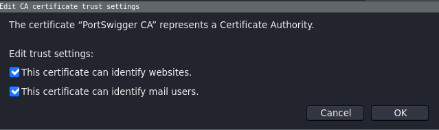

Herramientas
Burp Suite
Características
Burp Suite es una herramienta que nos facilita las tareas a la hora de examinar las peticiones web.
La herramienta (principal) que nos ofrece Burp suite es la posibilidad de establecer un proxy entre nuestro equipo y cualquier petición web que realizamos hacia un servidor web.
Esta herramienta nos permite modificar cualquier petición. Además podemos utilizar otras funcionalidades como:
1.- Intruder: Nos permite modificar las peticiones web, por ejemplo, centrándonos en un punto concreto de la petición, de forma que podemos probar diferentes valores. La característica principal es realizar ataques automatizados.
2.- Repeater: Nos permite reenviar las peticiones web modificando los valores y observar la respuesta del servidor de forma muy sencilla (sin tener que salid de la aplicación)
3.- Target: Esta funcionalidad nos ofrece la posibilidad de escanear la aplicación web en busca de información sobre la misma
4.- Sequencer: Esta funcionalidad nos permite analizar la aleatoriedad de las partes de la aplicación como los token de sessión
5.- Decoder: Nos permite Codificar / Decodificar diferentes Strings (útil por ejemplo para realizar encoding en formularios)
6.- Comparer: Integra la funcionalidad del comando diff para peticiones web
7.- DOM Invader: Nos permite encontrar vulnerabilidades DOM XSS en la web.
8.- Logger: Nos permite tener un control de todas las peticiones hechas por burp suite
Instalación y configuración
Podemos obtener la version _community__ desde la .
Obtendremos un paquete compilado .jar el cual podremos abrir en cualquier sistema que tengamos Java instalado. Desde terminal, podemos usar el comando
java -jar burp.jar
Como resultado obtendremos la posibilidad de crear un proyecto (donde se almacenará toda la información del análisis realizado a una aplicación web). En el caso de realizar pequeñas pruebas, podemos seleccionar la opción de temporal project
Configurar la funcionalidad proxy
Una vez abierto podemos configurar la funcionalidad de proxy.
En la barra superior tenemos que seleccionar la opción de proxy. Dentro de este menú seleccionamos la opción de Options. Obtendremos una ventana igual a la siguiente.

Dentro de la sección Proxy Listeners tendremos que agregar un nuevo elemento. Al agregar un proxy nuevo tendremos que configurarlo. Lo más importante a configurar es el puerto donde va a escuchar el proxy. Este campo se corresponde al Bind to Port del siguiente formulario. Por defecto Burp Suite configura el puerto 8080. En el caso de que tengamos corriendo algún servicio en este puerto,puede causar problema por lo cual podemos escoger cualquiera de los disponibles. Una vez seleccionado el puerto se creará el proxy. Solo quedaía configurarlo dentro de nuestro navegador.
Configuración de proxy en Firefox
Dentro de Firefox tenemos que irnos a las opciones y seleccionar la funcionalidad de proxy. Introducimos los datos como se muestran en pantalla. Teniendo en cuenta el puerto que hemos configurado anteriormente en Burp Suite
Una vez realizado todos los pasos, activamos el modo intercept y obtendremos todos los paquetes que accedamos en el navegador.

Configuración de SSL
Cuando tenemos que atacar cualquier página con SSL. El navegador nos dará un error al estar trabajando con el proxy de Burp Suite (ya que este no tiene SSL configurado) El error es el siguiente:
Para poder solucionar esto, tenemos que generar un certificado CA. Este certificado nos lo genera burp suite en la configuración del proxy. Tenemos que generar el archivo en Import/Export CA certificate. Esta opción nos generará un archivo que tendremos que importar posteriormente. Dentro de esta opción tenemos que exportar el formato como DER
Para importar el certificado tenemos que irnos a las opciones del navegador e importarlo dentro de las configuraciones de seguridad.
Al importarlo tendremos el siguiente Warning Esto es causado porque el certificado de CA no es aprobado por una entidad reconocida (este generado por nosotros mismos). como sabemos que ester certificado es nuestro, no corremos ningún riesgo y por lo tanto podemos importarlo. Una vez importado lo tendremos en el listado bajo el nombre PortSwingger
Tenemos que darle a la opción de edit trust y seleccionar ambas opciones. 
Con todo esto configurado podremos acceder a cualquier página con SSL capturando las peticiones sin problema.